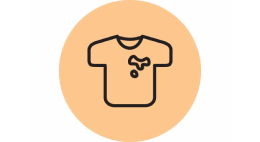
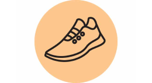
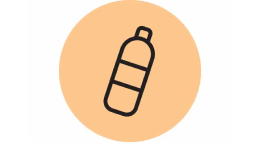

Prepare to get a little bit messy!
Join us this year for another exciting adventure!
We’ve all felt the impact of the coronavirus, and an outdoor event is the perfect way to have some fun while being safe. Not only this, but you can help raise money for Connecticut Children's Hospital by participating. So grab some friends and family and race 5 kilometers around Crystal Lake to the finish line - all while getting colorful!
Enjoy a leisurely jog with friends or train hard to aim for first place. This year’s grand prize is a year’s supply of Kloter Farms’ ice cream!
Sign Up Today!What To Bring
-

Old Clothes.
We use washable pigments, so don’t worry too much about your clothes getting stained.
-

Running Shoes.
Make sure to bring some shoes that will hold up as you race around the lake.
-

Water.
Stay hydrated out there! Don’t worry if you forget to bring some - we will be providing complimentary water cups along the way.
-
A Fun-Loving Spirit!
Running 5 kilometers is no easy task. Bring the energy, and we’ll bring the fun.
Make A Difference.
Ellington’s Color Run has helped support Connecticut’s Children Hospital for the past 15 years. Throughout the years, we have been able to contribute a significant amount to the hospital. You can be a part of the impact today by signing up for the run and collecting donations from friends, co-workers, and family.
Connecticut Children’s Hospital has been operating for more than 100 years and is now the only freestanding children’s hospital in Connecticut. As a nationally recognized Non-For-Profit organization, the hospital strives to make an impact on the community in multiple ways. Connecticut Children’s Hospital lists these three ways they make an impact:
Children across the state benefit from our support for community initiatives to keep children safer and healthier.
Academic medical professionals are supported in their pursuit of discovery through research.
Community-based pediatric health care providers receive the guidance and support they need from our multi-specialty experts.
If you would like to further support the children’s hospital there are multiple ways you can help. The hospital accepts toy donations to give to the children in their care. In addition to this, you can also volunteer to assist with care and other services at the hospital, or you may donate funds to the Connecticut Children’s Foundation. Support like this helps the hospital achieve their mission to advance the physical and emotional health of all children. Find out even more ways you can support the hospital here.
You can change a life